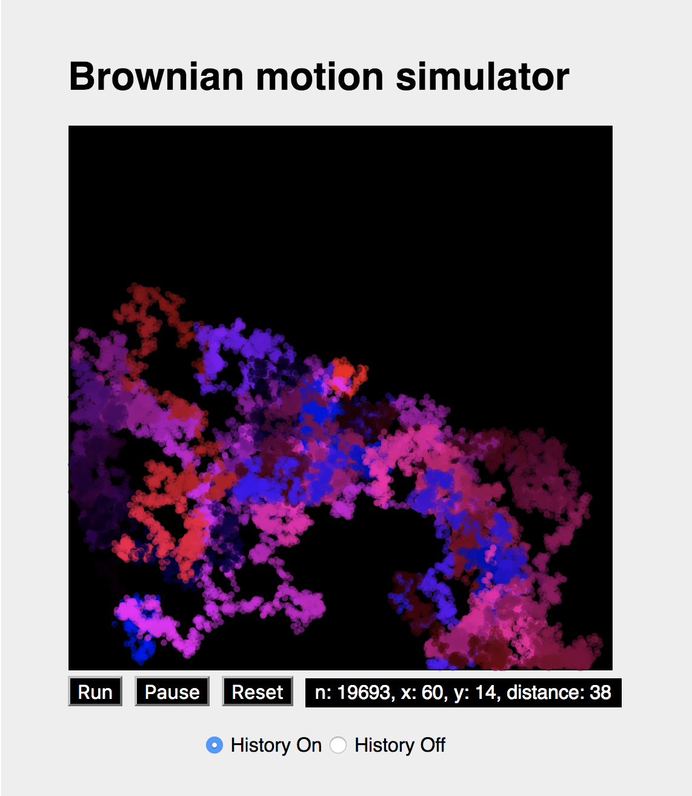

jxxcarlson.github.io
Contact
James Carlson: @jxxcarlson on elmlang.slack.com, or at gmail
www.knode.io
Knode.io is an app for creating, editing, and presenting technical documents on the web with full support for mathematical formulas, beautifully typeset with MathJax:
Originally designed for things like math and physics course notes, knode.io has other uses as well. Please see these examples.
The app has an Elm front end and a Phoenix-Elixir back end. I hope to release version 1.0 in January. Would love to have some brave users to test it and give feedback on it before then.
Documents at knode.io can be written in plain text, Asciidoc, or
MiniLateX.
MiniLaTeX builds on MathJax, adding support
for \section, tables, many environments (theorem, verbatim, etc.) and more. The idea is to have
a subset of LaTeX which (a) is good enough for writing lecture notes, articles, and books,
(b) renders live in the browser and (c) which can
also be processed by the usual tools, e.g., pdflatex.
For examples, see my home page at knode.io.
Here are two versions of the MiniLaTeX document:
(1) MiniLateX A
on the web at knode.io, and (2) the same document exported to a file and rendered with pdflatex:
MiniLateX B.
Physics simulations in Elm
Click on the links below to see a live demo.
 BilliardsWatch billiard balls bounce off walls of a rectangular container and occasionally off each other: angle of reflection equals angle of incidence. Code
Random WalkSimulate one of the simplest (and fairest) gambling games. You start of with a stake of $4. Then you roll a die. If it is even, you win one dollar. If it is odd, you lose one dollar. You repeat this process until either you go broke or you decide to stop. See how long you can play before going broke! Code
Brownian MotionSimulate Brownian motion. A particle, represented by a colored disk, takes random steps to the left and right, up and down. Its color also varies randomly, with the red and blue values changing by small random increments. Thus the underlying process is really a 4-dimensional random walk with two spatial dimensions and two color dimensions. A little bit like string theory, since the color dimensions are small compared to the spatial ones. Code
Drawing with Elm
Other Elm Apps
Caesar CipherPlay with the Caesar Cipher at GitHub